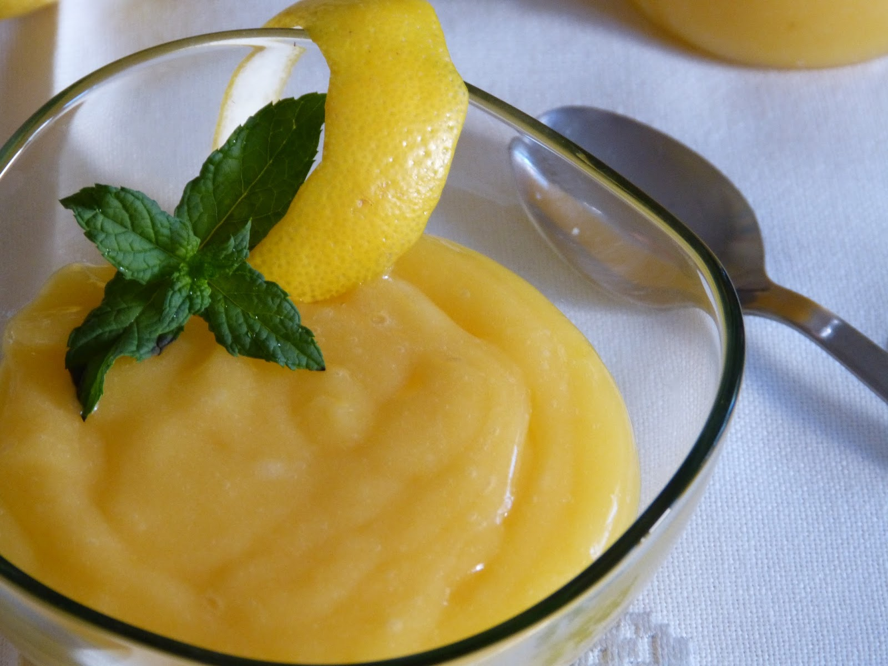

Chuño (postrecito)

Descripción:
Postrecito de maicena.
Ingredientes:
- 2 tazas de bebida o leche vegetal
- Un cuarto de taza de Cacao Amargo en polvo
- 3 cucharadas de Azúcar
- 4 cucharadas de Almidón de Maíz
- 150 gramos de Chocolate picado (o más Cacao Amargo)
- 1 cucharadita de Esencia de Vainilla
Instrucciones:
- Disolver todos los polvos primero con poquito líquido para evitar grumos.
- Cocinar a fuego muy suave o mediano hasta que espese.